Veganství je druh stravy, životní styl a filozofie, proto, když se šlověk rozhodne stát veganem, tak potřebuje ze začátku trochu pomoci s recepty, tipy a nápady...
Tak Vám přinášíme pár ozkoušených receptů.
 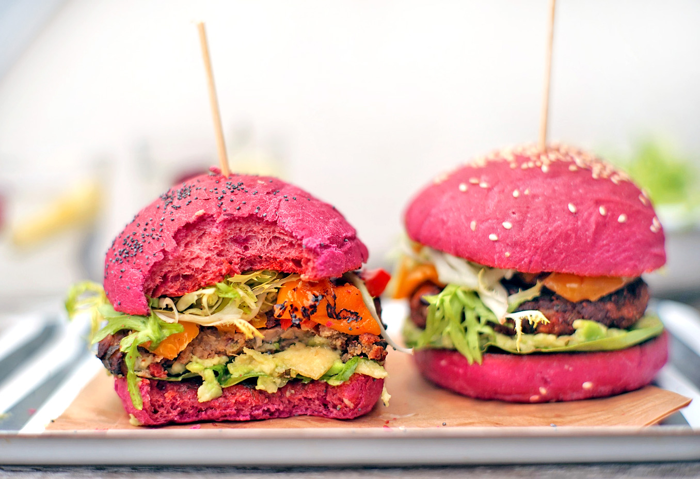
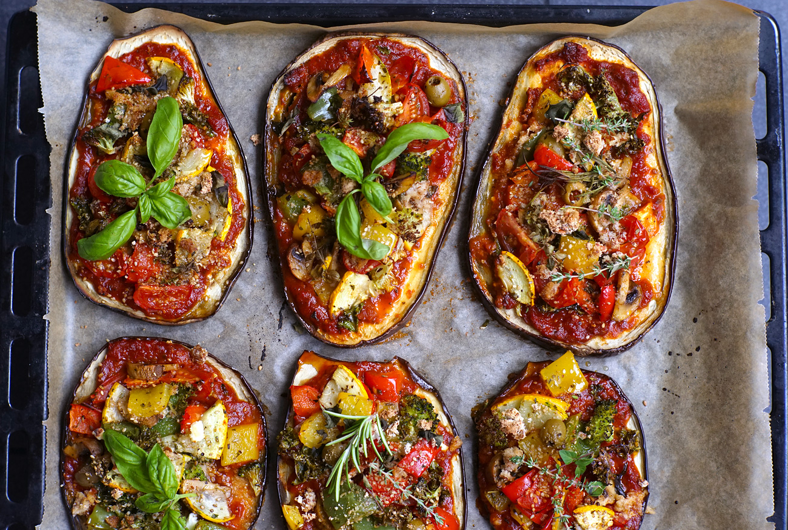
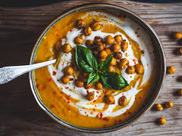
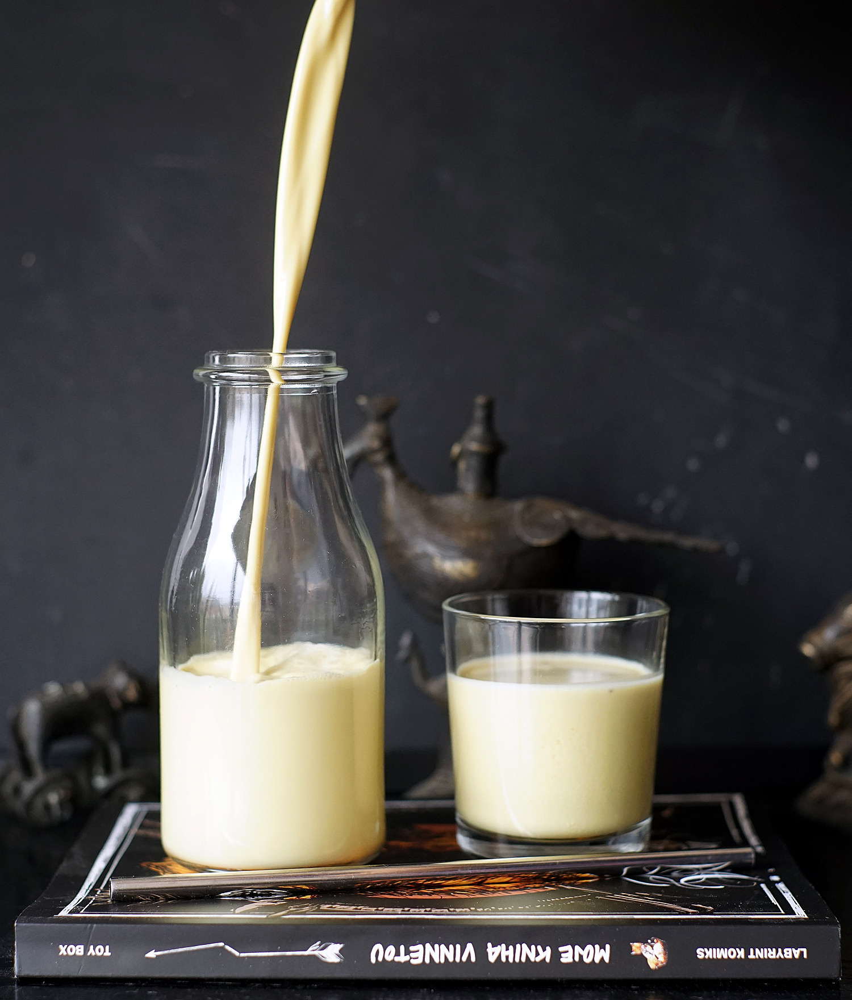
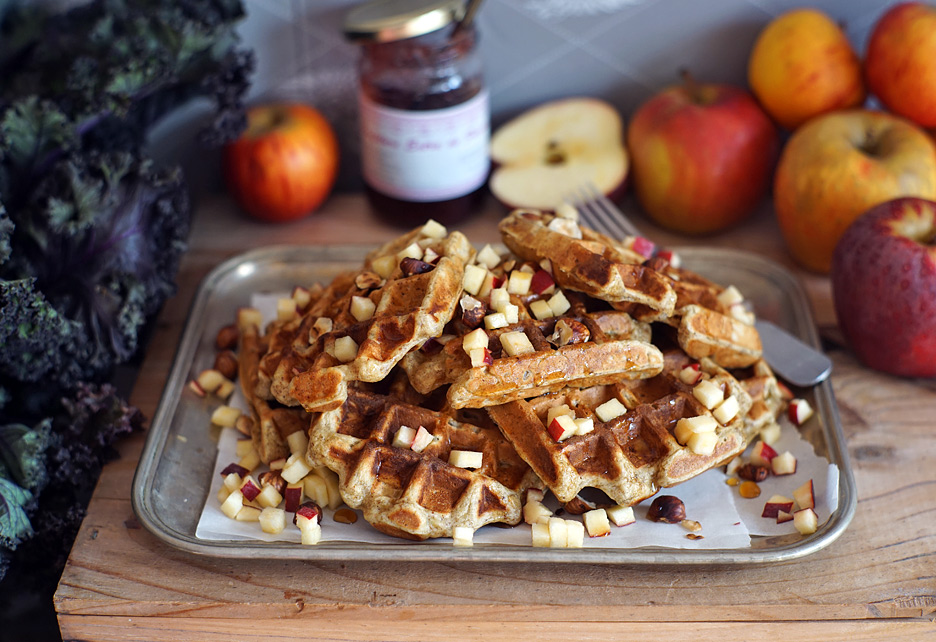
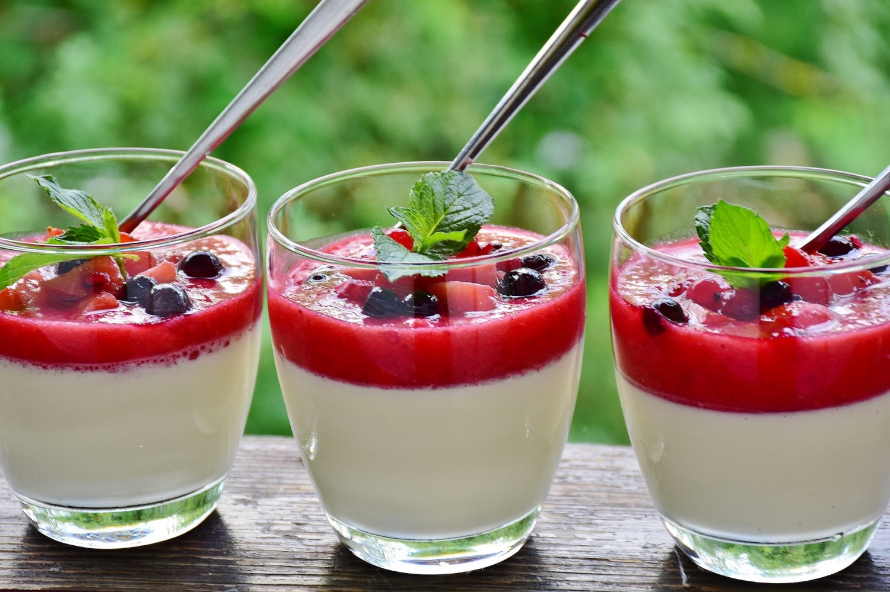
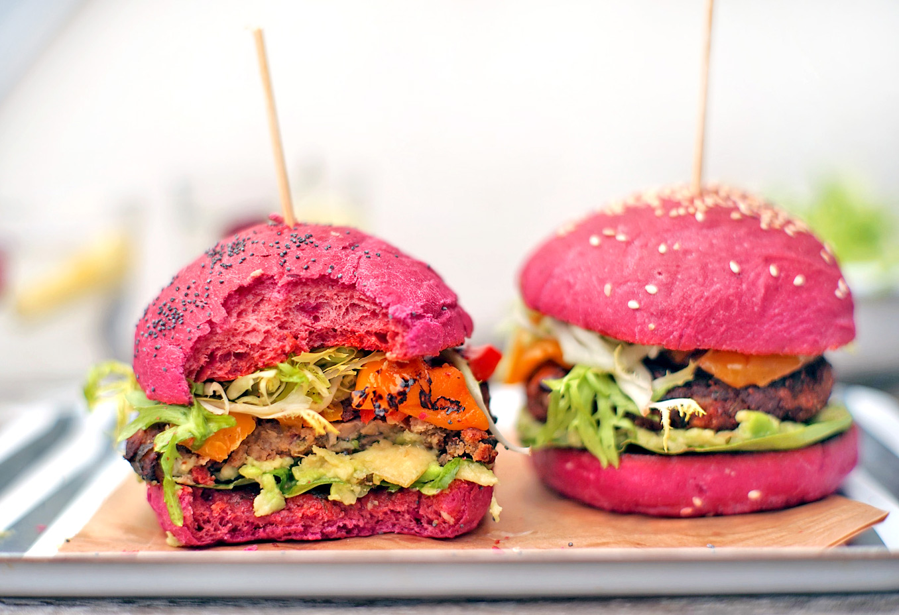
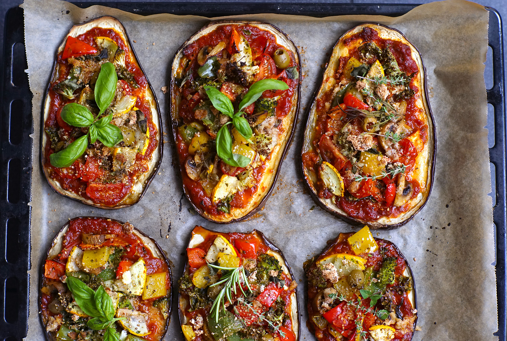
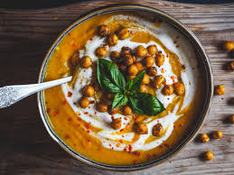
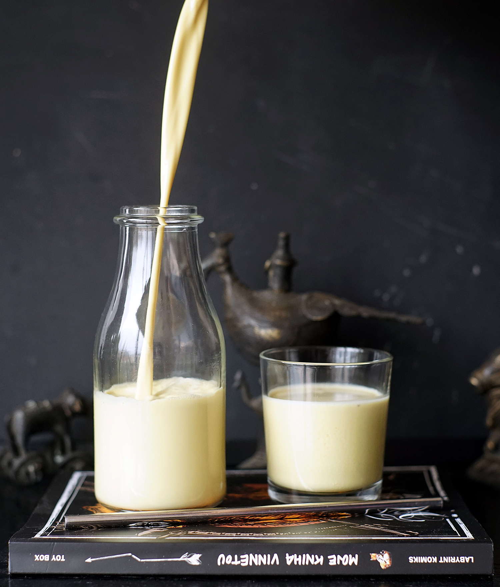
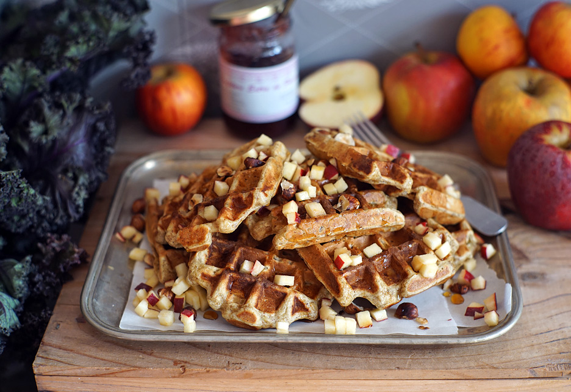
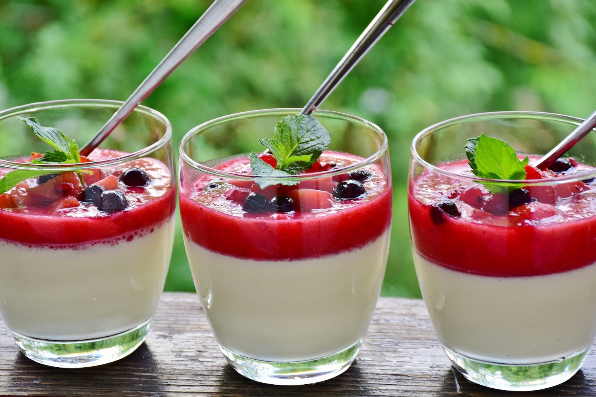
Turecký chléb Lavaš
INGREDIENCE:
POSTUP:Troubu předehřejeme na 250 °C.Mezitím si zpracujeme ingredience do těsta, které se nelepí. Následně vyválíme tenké placky. Ty naskládáme na plech, potřeme vodou a zasypeme například mákem. Pečeme přibližně 3 minuty, dokud se placka nenafoukne. zdroj:http://www.veganotic.cz/ |
Houbové koule s rajčatovou omáčkou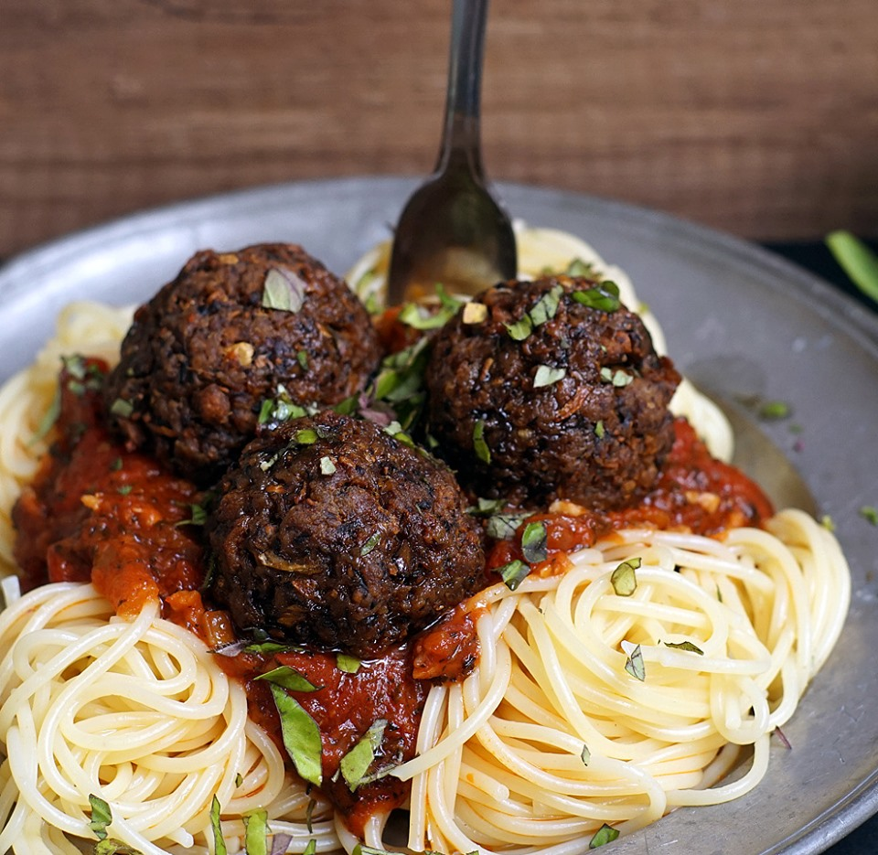INGREDIENCE:
POSTUP:V menším hrnci rozehřejte olej a 5 minut naněm opékejte cibuli (pozor, ať se nespálí). Poté přidejte česnek a nechte asi půl minuty osmahnout. Vmíchejte bylinky a cukr a nechte krátce (asi minutu) zkaramelizovat. Poté přidejte rajčata, přikryjte pokličkou (malou část hrnce nechte odkrytou, aby mohla unikat pára) a vařte na mírném plameni asi 15 minut. Už jen přidáme uvařené špagety a můžeme podávat zdroj:http://www.veganotic.cz/ |
|---|